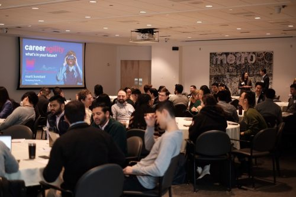

Our History
TechCon began in 2010 as a small gathering of passionate developers. Over the years, it has grown into one of the most anticipated global tech conferences, attracting thousands of participants and industry leaders.

TechCon began in 2010 as a small gathering of passionate developers. Over the years, it has grown into one of the most anticipated global tech conferences, attracting thousands of participants and industry leaders.
Our mission is to inspire innovation, promote knowledge sharing, and empower individuals through technology. TechCon serves as a platform for breakthrough ideas and community growth.
AI Pioneer and CEO of VisionTech. Dr. Sparks revolutionized the field of ethical AI and delivered a keynote on "AI for Humanity" in TechCon 2022.

Cybersecurity expert and author of "The Digital Fortress." Moore shared critical insights on internet safety and the future of digital defense at TechCon 2021.

Open-source advocate and lead engineer at CodeWorld. Sophia inspired the audience with her talk on community-driven development and inclusive tech.